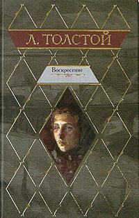

Лев Николаевич Толстой
Как ни старались люди изуродовать землю, на которой они жались, — весна была весною даже и в городе.
Роман. 1899. 128 глав в трёх частях.
Начать читать

59 глав
42 глав
27 глав